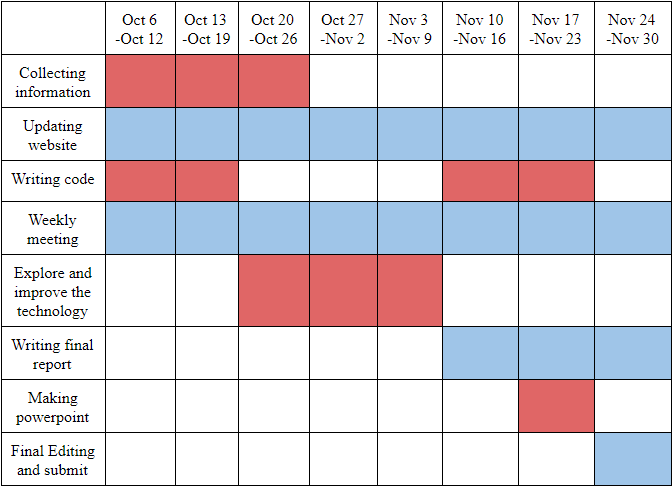
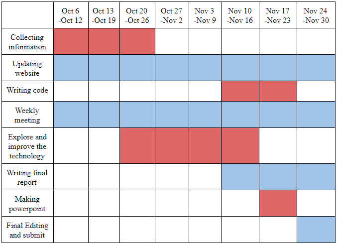
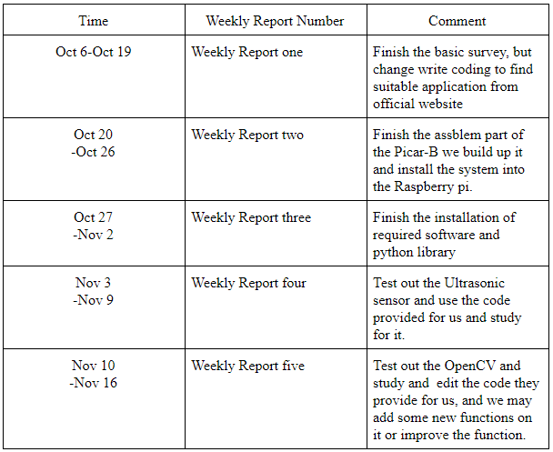

The subject of this course is about the multimedia system, and this robot car is a collection of speech recognition, video transmission and computer vision; We can combine the theoretical knowledge learned from the class with the technologies of this robot car to get the deep understanding of the practical application in multimedia technology. Moreover, we also want to explore the OpenCV Target Tracking System of this robot car further, which may be used in the obstacle recognition of auto driving in the future.
We studied and explored the characteristics of this robot car from the Internet, and then we bought and assembled it. Now, we know that the robot car can have Speech Recognition, Video Transmission and other functions after coding it.
Currently, we finished assembly part and installed all required software and python library. Also, we need to study more on the code provided by the Picar-B and we do some basic tests on the Picar-B. First, we need to use ssh to connect to the Picar-b and successfully use my own desktop to control the Raspberry pi server, and now we are able to transfer the data between two computers. So, in the future explore we are able to use my desktop to command and to do some more functions on the system used in Picar-B.
Now we have installed matching programs on both the computer and the picar, and also conducted basic tests. In future studies, we will use the ultrasonic sensor to detect the object in front of the Picar-B, and to avoid them to find a possible path on our real-world environment. The next step we will keep test to understand the entire operation and how technologies are used in the robot car. After that, we will use the python library SpeechRecognition to input our human voice and control the Picar, and make it can follow us command and we no longer need to type the command by use terminal. Finally, we want to improve some of the features of the robot car like OpenCV Target Tracking through the editing code of autonomous vehicle experiments.
Now we have studied how to use the OpenCV and to understand how this works and we test out and set it to track the biggest yellow object in the video stream. Also, we need to calculate the distance by using the video stream image per each frame and to keep the Picar in the good distance between the object and itself.
Now we almost finished the whole process of this project, and we also prepared a video to help demonstrate the background technologies of PiCar. And our final report is almost finished, we are just doing the final editing now.
After doing this project, we will finish the final report, the demonstration powerpoint, the project website and a set of codes about this Picar-B Mars Rover. The following table shows the weekly schedule:

And we also have updated schedule based current research situation:

Based on this schedule , we write the weekly report and summarize the progresses with regard to the schedule:
